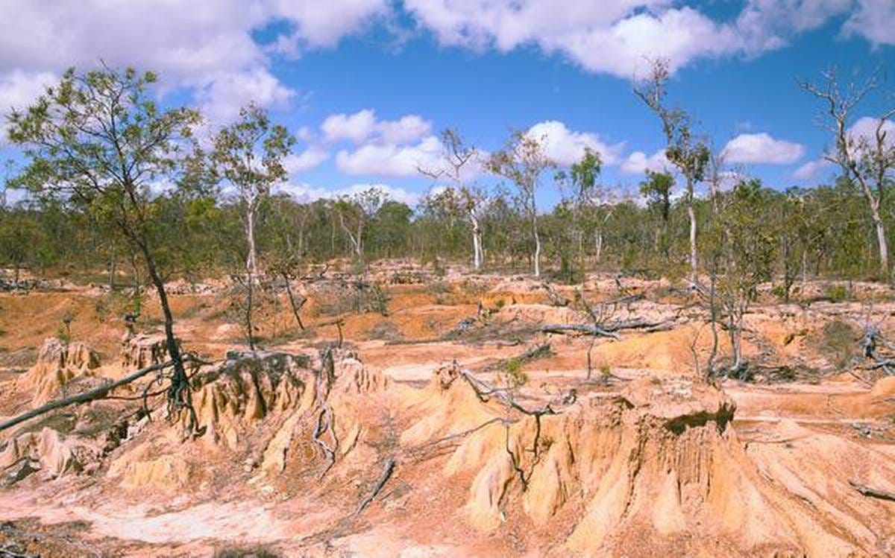

What is Deforestation?
Deforestation is the partial or complete removal of trees from an area of land previously part of a forest. Deforestation may be done for a multitude of reasons; including for wood as a material for construction or as fuel; to gain land for agriculture, livestock, or other development, to extract minerals from the land. Deforestation is prevalent all over the world, with heavy losses occuring in North and South America, Southeast Asia, and Central Africa.
Deforestation has several negative effects on the environment. For one, reduced forests contributes to global climate change due to reduced rates of carbon dioxide absorbtion by trees and plants, endangerment of species due to shrinking habitats, and increased risk of forest fires. Deforestation can also lead to increased likelihoods of landslide-causing soil erosion. Below is included an image of dry soil due to deforestation, which is more suseptible to erosion.

Resisting Deforestation
Resistance against deforestation can take many forms. Alternatives to traditional agriculture, such as biodynamic farms, regenerative agriclture, and other methods of sustainable and ethical farming have significantly less negative effects. Additionally, the effort to replant deforested areas is ongoing, and can help reverse some of the damage done previously by deforestation.
But what can you do? There are several ways you can directly help fight the destruction of forests around the world. First, vote for polititians who advocate for policies and regulations to prevent deforestation and support replanting efforts. Secondly, donate to organizations which help replant trees in deforested areas—often, even just five dollars is enough to make a difference. Thirdly, volunteer to help replanting organizations, and work to plant trees where forests have previously been removed.
Places to Donate
There are multiple quality organizations which are actively working to reverse deforestation.
Below is included a short video from the Arbor Day Foundation discussing the importance of the replanting movement.Citations
- Header image by David Riaño Cortés from Pexels.
- Soil erosion image from Eco-nnect Medium.
- Information from National Geographic, Brittanica, Live Science, and Wikipedia.